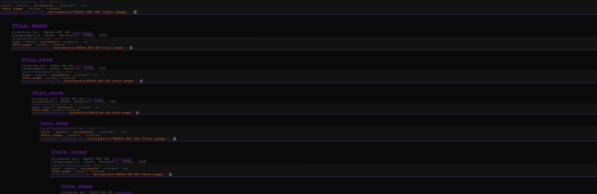

This page
Created at: 2023-05-20
[github]
Language(s) used: Haskell, HTML, CSS

Slightly meta, but this is the page you’re currently on. It’s a static site generated with Hakyll, a Haskell library for generating static sites. The most notable feature of this website is the navbar which shows the active page and active “directories” in the path, this is done with the activeClassField function:
activeClassField :: Context a
activeClassField = functionField "activeClass" $ \[p] _ -> do
-- if direcoryField contains "home" then "active" else "inactive"
path <- toFilePath <$> getUnderlying
return $ if p `isInfixOf` path then "active" else "inactive"Since the path contains the previous sites, it will simply highlight all pages in the path. Another feature is that it automatically generates its own hues for the color scheme, this is done with the Colour library and the generateColours function. This function currently doesn’t provide a perceptually uniform colour scheme but it’s good enough for now.